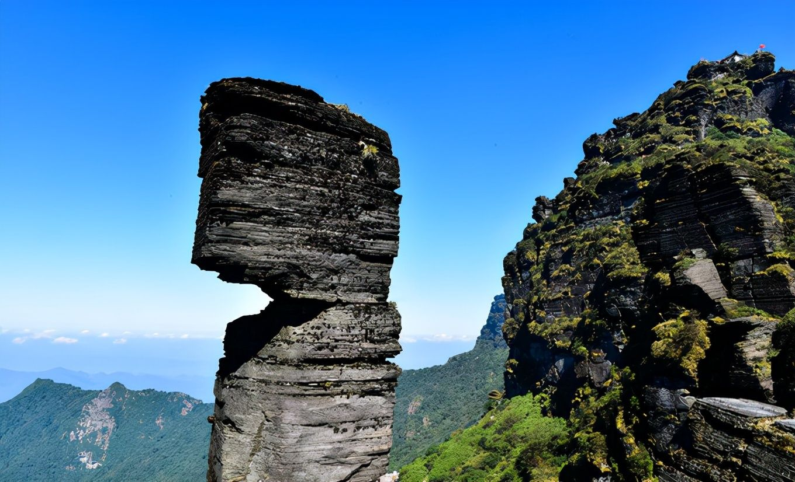
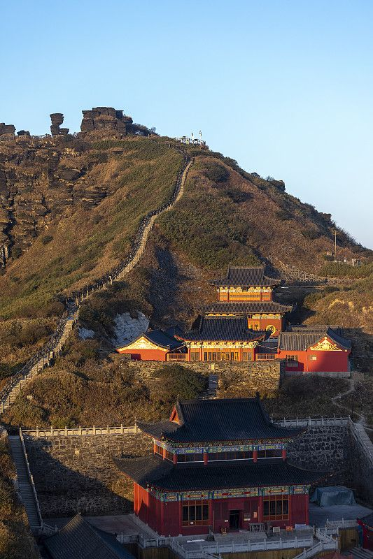
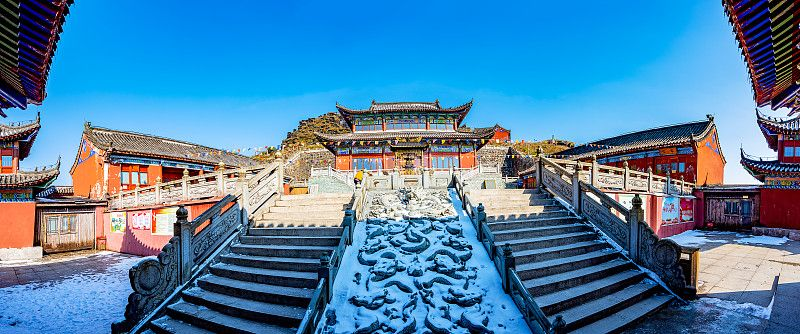

① 一分钟看懂 Fanjingshan
中国贵州 · 铜仁市
🎫 门票 100 元
📅 旺季 5–10 月
💰 上西线徒步/东线索道
🛡 山顶限流需预约
一句话：2018 年列入世界自然遗产的武陵山主峰（海拔 2572 米），以红云金顶、蘑菇石、万米睡佛与云端古刹闻名，是佛教弥勒道场，被称作"天空之城"。
🚗怎么去 & 住哪
- 高铁/火车：至 铜仁站、铜仁南站（沪昆高铁）或 凤凰古城站，再转车到 江口县梵净山东门约 1–1.5h。
- 东门（江口）：索道＋常规游线，大多数人走法；从江南古镇/铜仁往返方便。
- 西门（印江）：自护国寺方向徒步上山，山更高路更长，适合驴友，需充足时间与体力。
- 住宿：住江口县城性价比高、近东门；想拍日出云海可住景区周边民宿，旺季尽早订。
🥾路线玩法（东西线）
- 东线常规（推荐第一次）：景区大门 → 观光车 → 索道上站 → 蘑菇石 → 红云金顶 → 老金顶 → 承恩寺，原路索道返回。体力适中最省时的一日游。
- 西线徒步：印江西门 → 护国寺 → 万米睡佛观景台 → 一路穿林登顶，强度大，建议装备齐全的徒步爱好者。
- 精华小环：索道上去后优先 红云金顶＋蘑菇石两个核心点，云海/佛光多在清晨或雨后天晴出现，宜早到。
- 爬红云金顶：近乎 90° 的悬崖栈道与钻洞攀爬，需手脚并用排队上行，恐高者可在下方观景点欣赏。



🏔️核心看点
- 红云金顶：一峰两殿（上/下金顶各一小庙），晨昏云海染金，是梵净山代表景观。
- 蘑菇石：上宽下窄的风化叠石，形如巨菇，是地质奇观与日出机位。
- 承恩寺（古刹群）：云海之上的明代寺院建筑群，红墙黛瓦与群峰相映。
- 万米睡佛 / 老金顶：远观山脊酷似卧佛，登顶可俯瞰武陵群山与佛光。
- 云海 · 佛光 · 日出：雨后初晴的清晨概率最高，是整个行程最值得等的镜头。
📅旺季 · 淡季 · 最佳时间
| 季节 | 月份 | 天气/景观 | 人流/价格 | 适合 |
|---|---|---|---|---|
| 旺季 | 5–6 月、国庆 | 绿意葱茏、水汽足 | 人流大、需预约排队 | 常规游览 |
| 云海最佳 | 6–8 月雨后天晴 | 云海/佛光概率高 | 湿热多雨 | 摄影、观云海 |
| 秋高气爽 | 9–11 月上旬 | 天晴通透、层林尽染 | 适中、体验最佳 | 全景最佳时间 |
| 冬季 | 12–2 月 | 雪景雾凇、偶见积雪 | 人少价低 | 冰雪控、安静 |
山顶常风云瞬息万变，出发前看实时天气与景区开放公告，恶劣天气会临时封闭。
💰费用预算（参考）
🎫 门票
100 元（淡季可下浮，以官方为准）
🚌 观光车
往返约 20 元（东门）
🚠 索道
往返约 160 元
🏨 江口住宿
县城标间约 150–300 元/晚
🍜 餐饮
人均约 40–70 元/餐
💡 合计
东线一日游门票+交通约 300–420 元
🛟安全 & 贴士
- 高海拔+多雨：山顶温度比山下低 5–10℃，随身薄外套、雨衣/雨伞，穿防滑徒步鞋。
- 限流预约：旺季/法定节假日常需提前通过官方渠道实名预约购票，请务必提前。
- 恐高谨慎：红云金顶栈道极陡，带老人小孩量力而行，走步道不翻越护栏。
- 离山留程：末班索道与观光车有时点，预留返程时间，别因拍日落下不了山。
- 坐索道上下山时随身包里别放易滚动物品，扶好相机，看景不拍照更安全。